零配额 ETag 轮询
使用 GitHub If-None-Match 条件请求，仓库无变动返回 304 Not Modified，不消耗 API 限额；贴上 dragon-auto 标签自动入队。
把「拉取 Issue → 拆解需求方案 → 隔离分支编码 → 测试自愈 → AI 交叉审查 → 提 PR 盯 CI → SemVer 批量发版」装进一个可视化桌面软件。可控、可审批、绝不弄乱你手头正在改的代码。
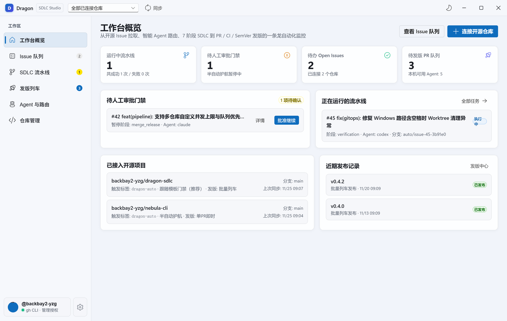
专为个人维护者与开源团队打造：既享受 AI 自动写代码修 Bug 的效率，又牢牢掌握合并与发版的最终确认权。
使用 GitHub If-None-Match 条件请求，仓库无变动返回 304 Not Modified，不消耗 API 限额；贴上 dragon-auto 标签自动入队。
内置 Claude Code、Codex（含桌面端内嵌 CLI）、Gemini CLI、Qoder、WorkBuddy、Antigravity 等自动识别，有原生登录态即可免配置使用。
支持 Anthropic、OpenAI、Google、DeepSeek、Kimi、智谱 GLM、通义千问、MiniMax、OpenRouter 及本地 Ollama 兼容端点。
支持按阶段独立混用不同 Agent 与模型档位：Claude 出方案、Codex 编码与测试、Gemini 独立审查，告别单一模型盲区。
本地构建/测试命令失败，或 GitHub Actions 检查红灯时，自动把错误日志回传给 Agent 修复重试，直到全部跑通。
每次任务在仓库同级 .dragon-worktrees 开独立分支，支持 1~6 个任务并发，绝不覆盖你主目录里正在改的代码。
支持「单 PR 即时发版」与「批量发版列车」，自动按 Conventional Commits 推算 major/minor/patch 版本号与 Changelog。
所有 GitHub Token 与模型 API Key 均加密存入 Windows Credential Manager，本地数据库不落盘任何明文密钥。
点击下方任意阶段卡片，查看该步骤具体在做什么、产出什么文件以及如何自愈与把关。
读取 GitHub Issue 正文、标签与仓库代码结构，把模糊描述拆解为可验证的验收标准清单（Acceptance Criteria），避免后续编码跑偏。
| 审批门禁档位 | 适用场景 | 暂停人工确认的节点 | 小白推荐度 |
|---|---|---|---|
| 跟随模板门禁（推荐） | 日常开源维护、智能按复杂度分流 | 简单修复仅合并前确认；复杂修复额外在「方案设计」后确认 | ⭐⭐⭐⭐⭐ 默认首选 |
| 仅合并前审批 | 希望编码与修错全自动，合并前自己看一眼 Diff | 仅在 阶段 7（合并与发布） 前暂停 | ⭐⭐⭐⭐ 省心稳妥 |
| 多节点强审批 | 核心生产库、高风险改动 | 方案设计、提交 PR、合并发布 前均暂停 | ⭐⭐⭐ 严格把关 |
| 全自动一条龙 | 文档维护、低风险测试库或全托管实验仓库 | 无暂停（测试与 CI 全绿后自动合并发版） | ⭐⭐ 进阶全托管 |
覆盖从 GitHub 登录、仓库管理、Issue 准入、流水线日志与 Diff 审阅，到发版列车与多 Agent 路由的全部核心页面。
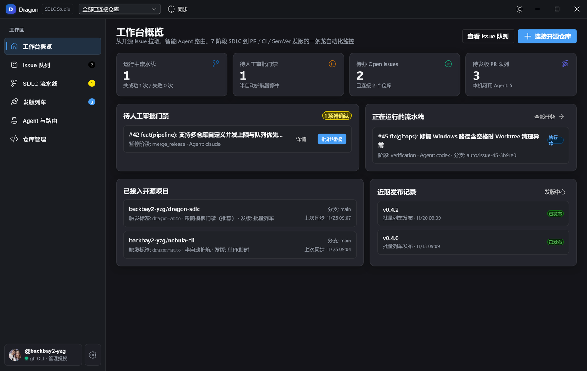
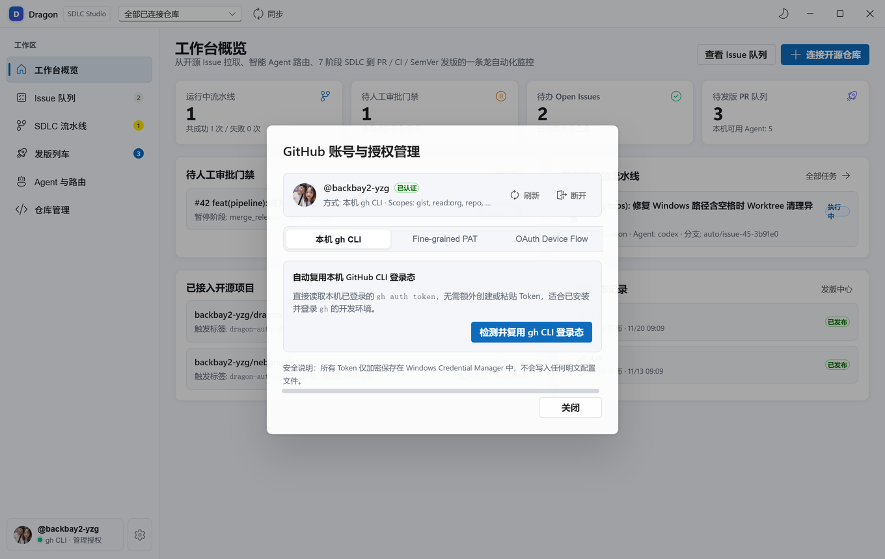
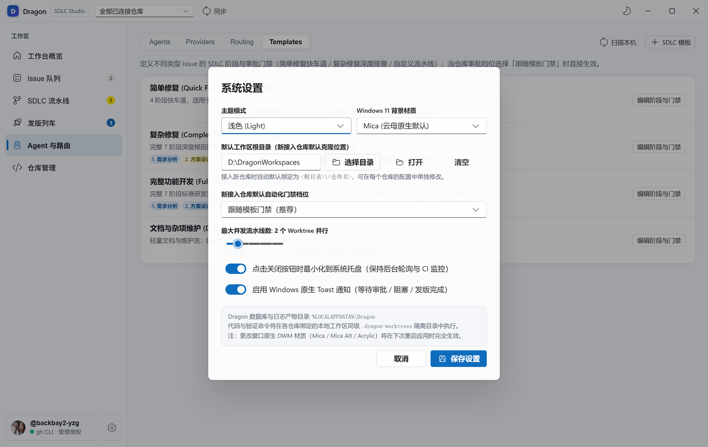
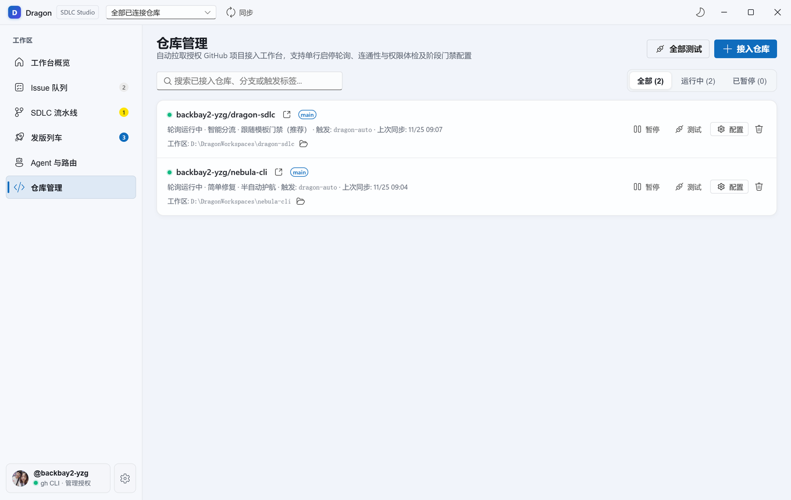
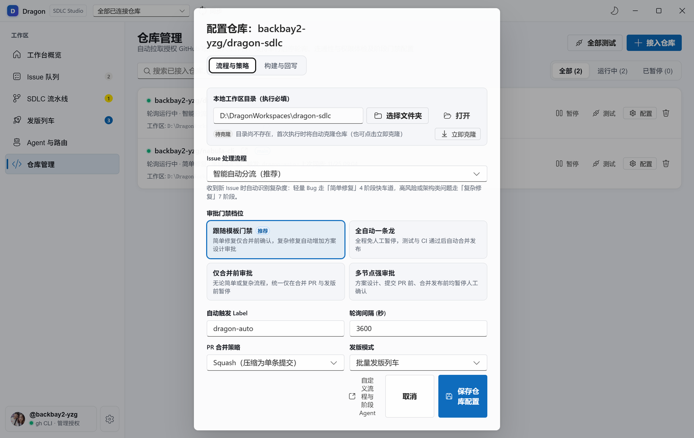
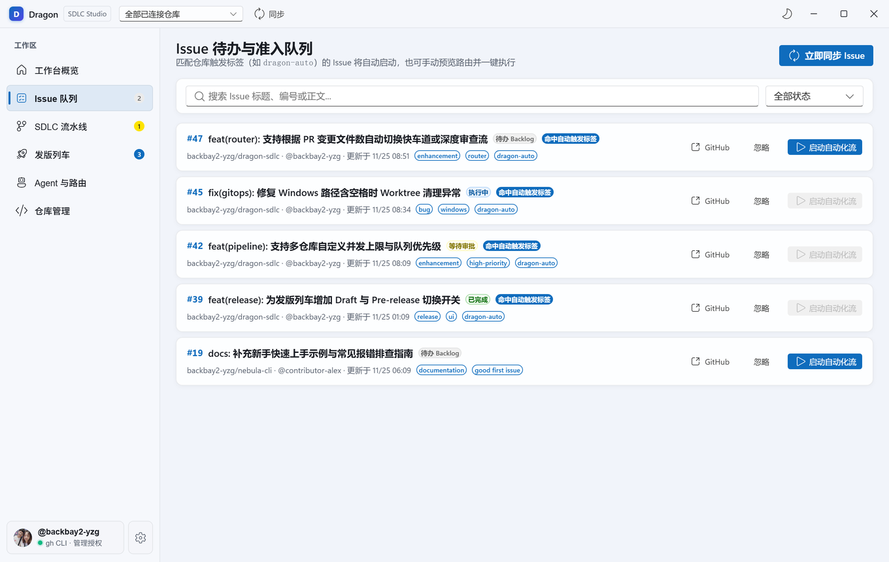
dragon-auto 标签的 Issue，支持搜索、筛选与忽略。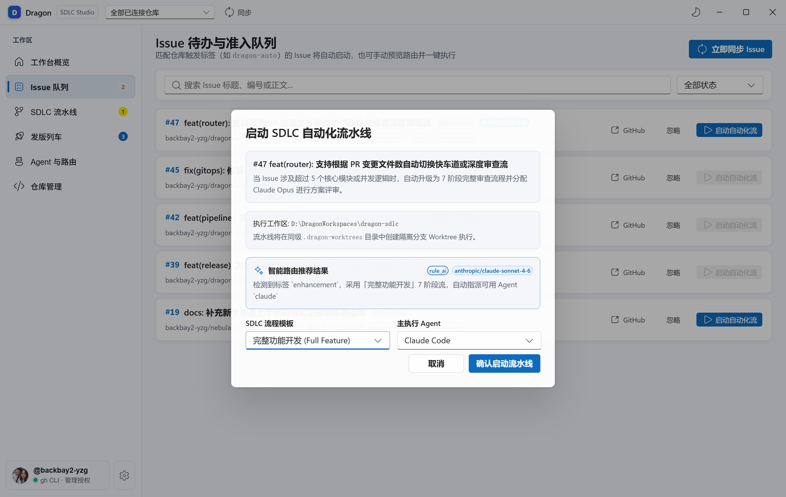
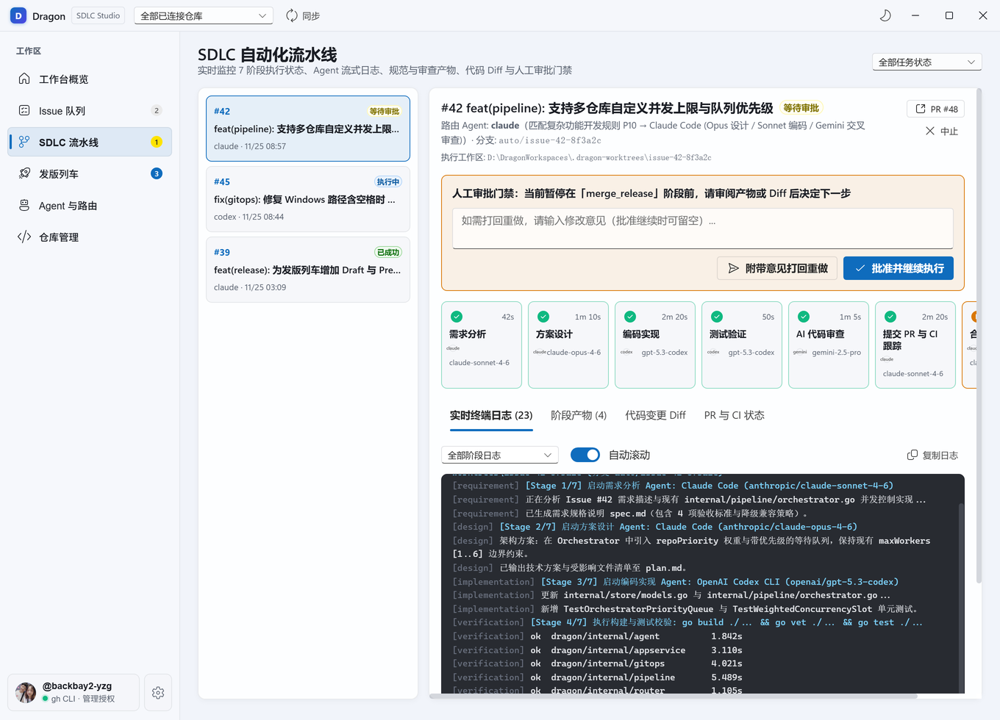
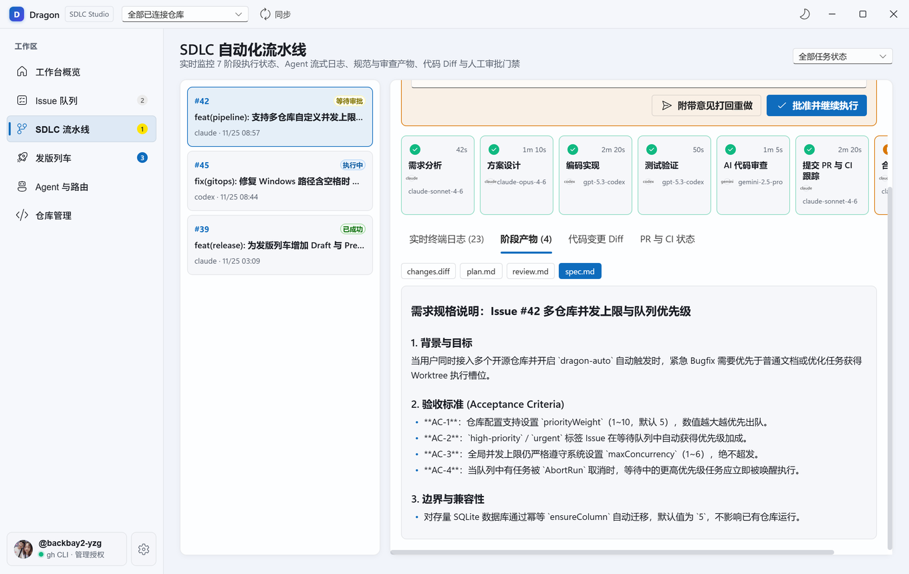
spec.md、plan.md 与 review.md。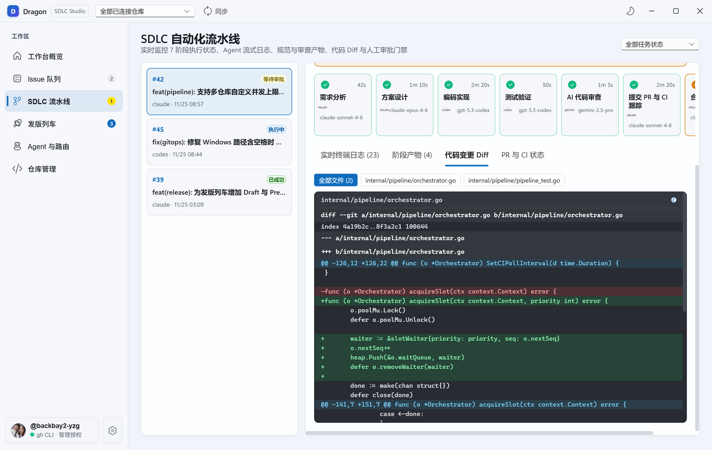
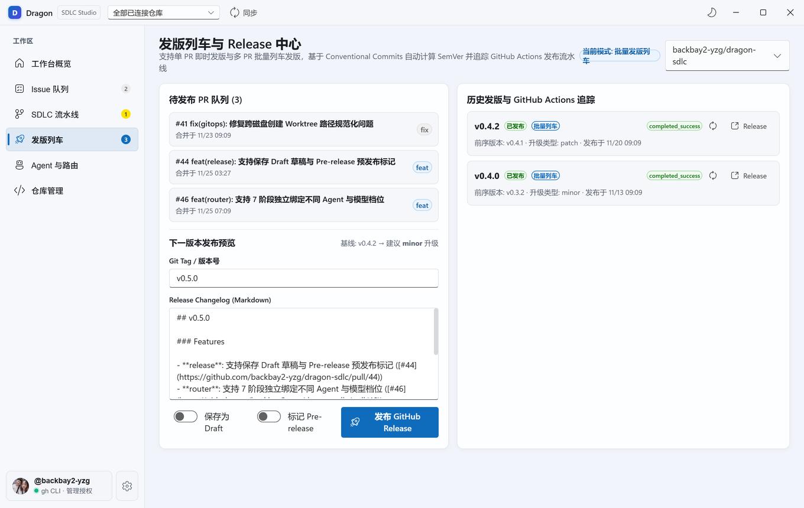
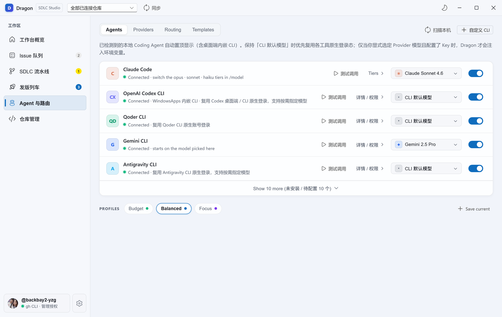
Budget / Balanced / Focus 一键切换配置快照。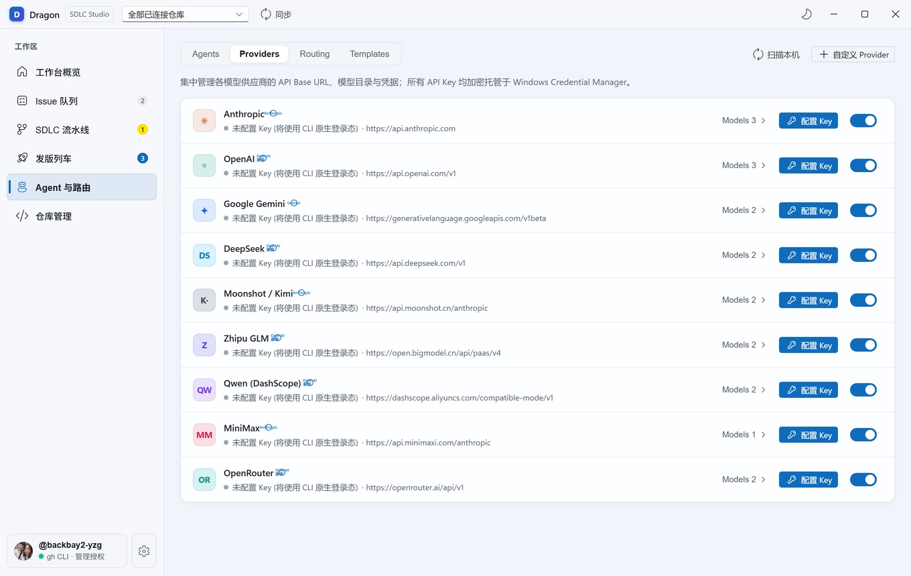
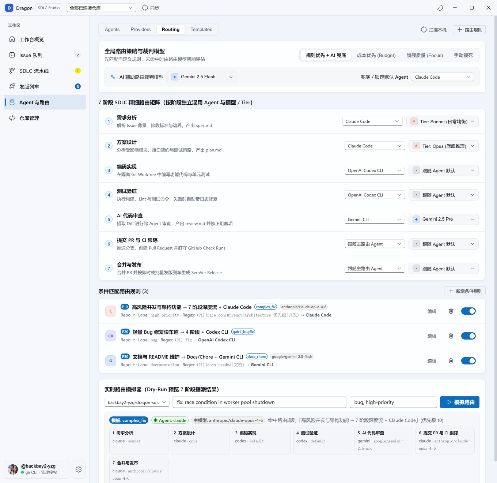
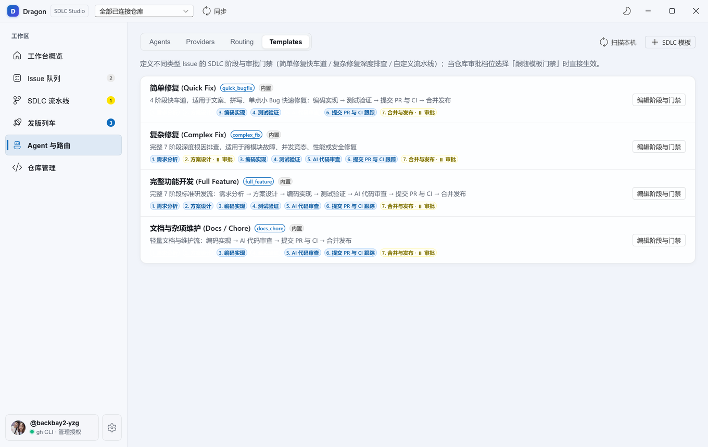
第一次打开 Dragon？按顺序跟着这 5 步走，5 分钟内就能跑通属于你的第一条全自动 Issue → PR 流水线。
Contents (R/W)、Issues (R/W)、Pull requests (R/W) 与 Actions (Read)，粘贴后点「保存并验证」。claude、codex login、qodercli login），直接点右侧 「测试调用」 验证连通性即可。D:\DragonWorkspaces）。owner/repo。go test ./... 或 pnpm test），AI 跑失败会自动读日志自我修复。dragon-auto 标签自动触发）。spec.md / review.md 与红绿代码 Diff，确认无误点 「批准并继续执行」 合并 PR。按表格确认电脑已装好以下基础软件，然后在 Windows PowerShell 复制运行下方命令即可。
| 软件工具 | 版本要求 | 检查命令 | 用途说明 |
|---|---|---|---|
| Git | 2.30+ | git --version |
拉取仓库、创建隔离 Worktree 与生成代码 Diff |
| Go | 1.26+ | go version |
编译运行 Dragon 后端多阶段调度引擎 |
| Node.js & pnpm | Node 20+ / pnpm 9+ | node -v && pnpm -v |
安装前端依赖与构建 React + Fluent UI 界面 |
| Wails v3 CLI | v3.1.0 | wails3 version |
热重载调试与打包单文件 Windows 可执行程序 |
| GitHub CLI (可选) | 最新版 | gh --version |
推荐安装，1 秒自动复用本机 GitHub 登录态 |
go install github.com/wailsapp/wails/v3/cmd/wails3@v3.1.0
git clone https://github.com/backbay2-yzg/dragon-sdlc.git cd dragon-sdlc pnpm --dir frontend install # 开发模式（支持热重载调试） wails3 task dev PACKAGE_MANAGER=pnpm # 或直接编译正式版单文件可执行程序（输出至 bin\dragon.exe） wails3 task build PACKAGE_MANAGER=pnpm
go test ./...
遇到提示不知道怎么处理？先看看下面这 8 条高频解答。
点提示中的「前往配置工作区」（或进入 仓库管理 → 配置），填写一个空文件夹点「立即克隆」，或直接选择本机已克隆好的项目文件夹即可。
确认命令行在系统 PATH 中（或在 Agent 详情弹窗手动填入可执行文件完整路径后点「扫描本机」）；若提示需登录，按弹窗「安装与登录指引」在终端执行一次登录命令，或在 Providers 配好 API Key。
不会。默认「跟随模板门禁」以及「仅合并前审批」「多节点强审批」都会在合并前强行暂停并弹窗通知，必须由你亲自看完 Diff 点「批准并继续执行」才会合并。
不会。Dragon 始终通过 git worktree 在同级 .dragon-worktrees 隔离目录与独立分支操作，绝对不会改动你正在写的主目录。
不会。每次请求都带 ETag 条件头，无新变动时 GitHub 返回 304 Not Modified，官方不扣减任何 API 配额。
所有 Token 与 Key 全部通过系统安全接口加密存入 Windows Credential Manager，软件目录与 SQLite 数据库中不存储任何明文凭据。
浅色/深色主题会立即生效；Windows 11 底层 DWM 窗口材质需在窗口创建时注册，更改后请托盘右键「退出 Dragon」再重新打开即可完整生效。
本地数据库、镜像与阶段产物日志默认存于 %LOCALAPPDATA%\Dragon。退出应用后删除该文件夹即可恢复全新初始状态。